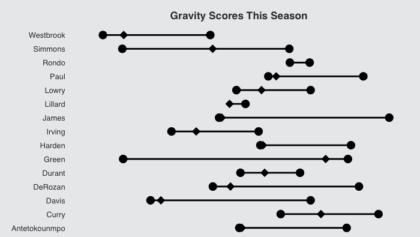
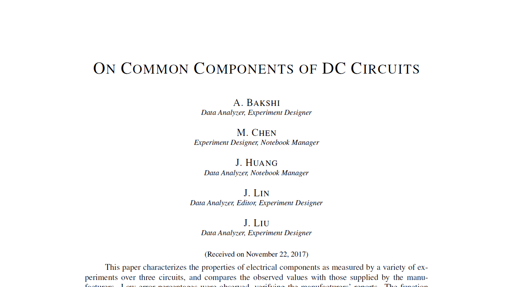
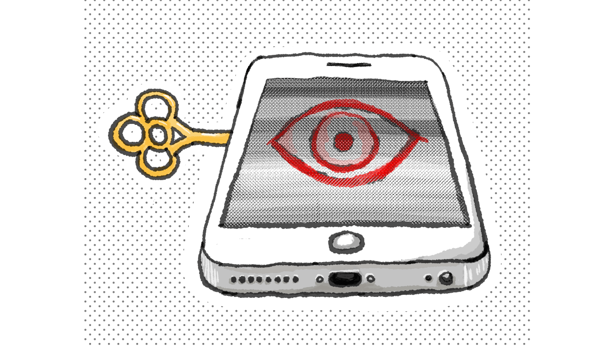

Julien Lin
Project Portfolio
Article Portfolio
Articles that I wrote for The Reckoner, one of the best student-run papers in Toronto, as well as scientific studies written in collaboration with my group members in AP Physics.

The Gravity Score

On AC Circuits

US Election

On DC Circuits

On Quantum Phenomena
DeMar DeRozan

The FBIPhone